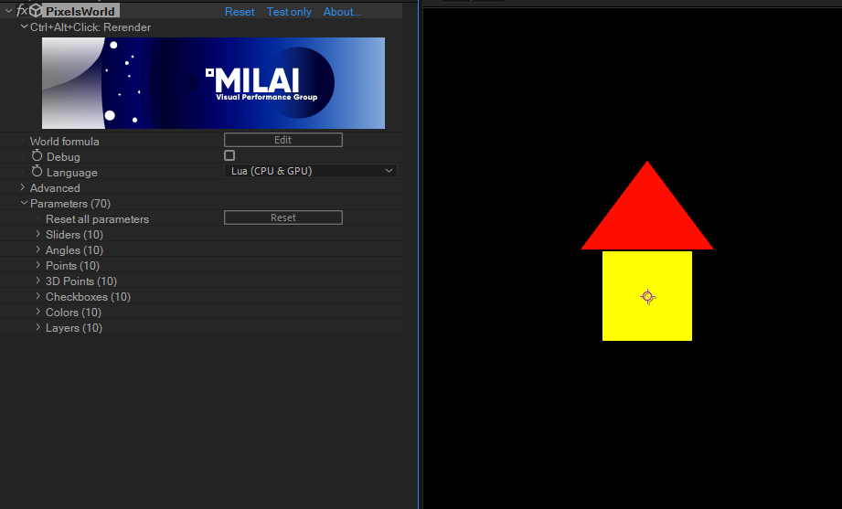

Be the Creator of your world
PixelsWorld documentation version: v3.3.0
Author ZzStarSound
History
v2.3.1
v1.0
中文版
日本語
Welcome to PixelsWorld!
We have compressed all essence of how to use PixelsWorld in this section. If you master it, you will be a new creator of PixelsWorld!
To be simple
PixelsWorld renders image basing on your code
- You can use presets that written by other people.
- By learning how to write the Draw code, drawing shapes step-by-step to your scene.
- By learning the hardcore GLSL, creating advanced visual effect by yourself.
How to do?
PixelsWorld is a Drawing robot, if you tell it what/where to draw step-by-step, it will draw the shapes into the current scene for you.
For instance, consider the case that you want to draw a house in the middle of the canvas, but the painter is your friend Andrew (and Andrew doesn't know what you want to draw). How to make the instructions so that Andrew can draw it for you?
We would say:
DrawHouse.myBro
Draw a house in the middle of the canvas
This is OK, but what if you cannot tell Andrew the answer directly, but 1. where to draw, 2. what to draw, 3. the color instead, maybe we need to say:
DrawHouse2.myBro
move the paintbrush to the center
use yellow pigment
draw a 10x10cm square
move the paintbrush 5cm upward
use red pigment
draw a 15cm base length, 10cm height isoceles triangle.
And then, you and Andrew complete the house painting!
Indeed, the instructions above is exactly what we need to write in PixelsWorld. By clearing it up, it looks like this:
DrawHouse3.lua
version3() -- use version 3, this is a function that you always have to call in the first line.
move(width/2, height/2) -- move the paintbrush to the center
rotateX(PI) -- rotate space along X axis
fill(1,1,0) -- use yellow pigment (Red=1,Green=1,Blue=0)
rect(100) -- draw a 100x100px square
fill(1,0,0) -- use red pigment(Red=1,Green=0,Blue=0)
move(0,50) -- move the paintbrush 50px up
tri(150,100) -- draw a 150px base length, 100px height isoceles triangle.
There is a function
rotateX(PI)we didn't mention before. Because the default orientation of the Y axis is downward, we need to rotate it along X axis 180 degrees (PI radians) to make it upward. Otherwise, the following movement of paintbrush will move it 50cm downward.


Here we want to add some extra controls to the scene like change the color combination of our house.
DrawHouse3.lua
version3() -- use version 3, this is a function that you always have to call in the first line.
move(width/2, height/2) -- move the paintbrush to the center
rotateX(PI) -- rotate space along X axis
fill(color(0)) -- use color parameter 0 as pigment
rect(100) -- draw a 100x100px square
fill(color(1)) -- use color parameter 1 as pigment
move(0,50) -- move the paintbrush 50px up
tri(150,100) -- draw a 150px base length, 100px height isoceles triangle.
If you click the Ok button, the house would disappear!
Actrually the house is still drawn in your scene, but the default color controls are black, so the house is also black.
Open the Parameter list, find the first 2 Color controls, change it to the color you want.

Mayor is me! Draw more houses
One big advantage of using code is doing repetitive things.
Lua language is able to repeat your instructions as many times as you want.
DrawHouse3.lua
version3() -- use version 3, this is a function that you always have to call in the first line.
move(width/2, height/2) -- move the paintbrush to the center
rotateX(PI) -- rotate space along X axis
for i=1,3 do -- begin repeat (3 times)
fill(color(0)) -- use color parameter 0 as pigment
rect(100) -- draw a 100x100px square
fill(color(1)) -- use color parameter 1 as pigment
move(0,50) -- move the paintbrush 50px up
tri(150,100) -- draw a 150px base length, 100px height isoceles triangle.
move(0,-50) -- move the paintbrush back
move(175,0) -- move the paintbrush 175px right
end -- End mark of repeat

Finally, we want to give the controls some names:


Save the instructions to preset.
Note: This step may need the Administrator mode if you have installed Ae in the System disc (maybe C).
First of all, add a new Preset column to save your preset:

Then, save your preset in the new Preset column:

Apply preset
Select the preset you want to apply, click the Replace button.
Congratulations!
You have mastered the main part of how to use PixelsWorld.
>>> Next step: Go to the lua chapter for more details
PixelsWorld ability